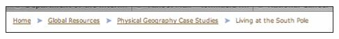
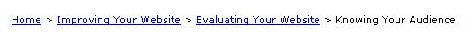

Breadcrumbs are designed to allow visitors to quickly navigate a site by providing a trail. For example:


Trails may be dynamically generated based on an actual path, which would vary from visitor to visitor; another option may be a trail indicating the site’s prime architecture, regardless of the visitor’s path throughout the site. The latter option, along with other navigation cues, may be better in helping site visitors form a mental model of the site (Rogers and Chaparro, 2003).
A question designers must ask themselves before implementing breadcrumb navigation is: Will it improve user understanding and performance?
The Research Studies
Research indicates that frequent visitors may be the ones to get the most advantage of breadcrumbs.
One study (Rogers and Chaparro, 2003) reported no difference in task completion times and total pages visited between groups that had breadcrumbs and those that did not. Participants could have used breadcrumbs thirty-two percent of the time, but only did so six percent of the time. It is probably not worth the effort to include breadcrumbs unless you can show that your Web site’s users use them frequently, either to navigate the site, or to understand the site’s hierarchy.
Another study (Hull, 2004) found that test participants who received instruction on the use of breadcrumbs completed tasks much faster than those who did not. During the study, the researchers pointed out the breadcrumb trails to the participants and asked the participants to use the breadcrumbs whenever feasible. The time savings from using breadcrumbs could result in increased productivity for users that search Web sites on a daily basis, e.g., intranet users within an organization.
Some Caveats
In the examples provided above, note the right-pointing arrows. Nielsen discusses his changeover from colons to arrows  . The rationale for the arrows instead of colons or other indicators was because “the arrows seem to be slightly easier to understand as an indication of moving deeper and deeper into the site.”
. The rationale for the arrows instead of colons or other indicators was because “the arrows seem to be slightly easier to understand as an indication of moving deeper and deeper into the site.”
Rogers and Chaparro (2003) found that the most effective use of breadcrumbs occurred when the trail was placed below the page title instead of above it at the top of the page. In the example below, note the close proximity of the breadcrumb to the page title.

Assuming that site visitors notice and use them, breadcrumbs allow visitors to quickly navigate a site by providing a trail. Research indicates that those who would most benefit are frequent users who spend a lot of time on a site and who have had some instruction in the usefulness of the breadcrumbs.
References
Hull, S.S. (2004), Influence of training and exposure on the usage of breadcrumb navigation, Usability News, 6.1 (http://psychology.wichita.edu/surl/usabilitynews/61/breadcrumb.htm ).
Rogers, L. & Chaparro, B. (2003). Breadcrumb navigation: Further investigation of usage. Usability News, 5.2. (http://psychology.wichita.edu/surl/usabilitynews/52/breadcrumb.htm ).